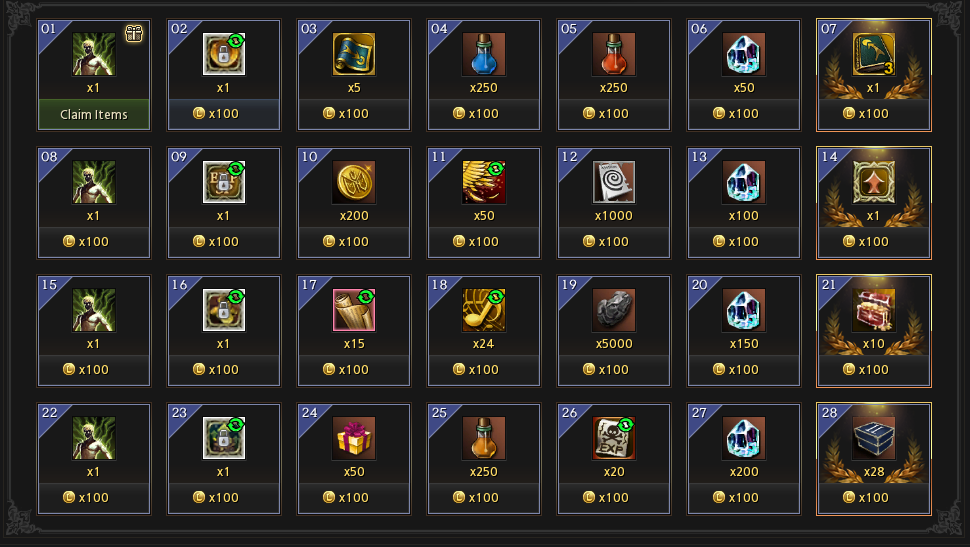
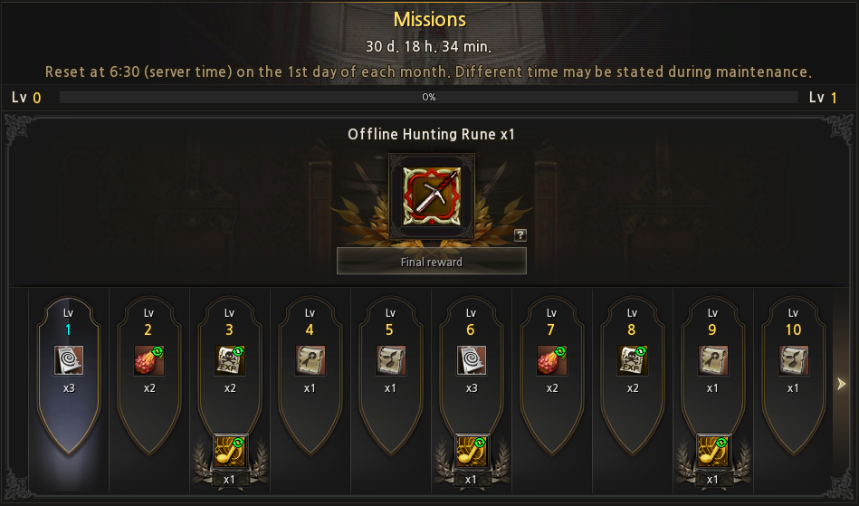
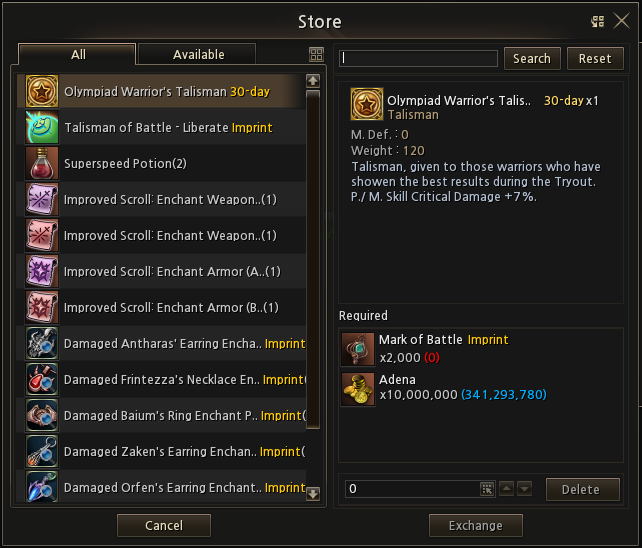
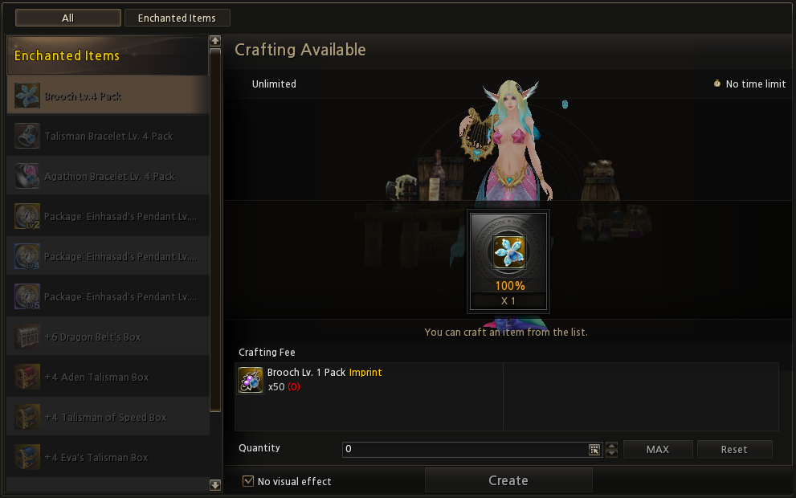

The world of Age of Splendor evolves once again! With the launch of our new server, Haru x3 Classic Remastered, opening May 9th at 20:00 UTC+2, and beta testing beginning on May 2nd, we're thrilled to unveil groundbreaking features, community-driven events, and a game environment crafted with fairness and fun at its core.
A New Leaf
The Spring "Haru" update has arrived, bringing fresh content and balance changes to shake up the meta after our wildest season yet! We've listened to your feedback and implemented key adjustments to gameplay mechanics, addressed major exploits, and introduced exciting new features that'll keep the battles raging. Get ready to adapt your strategies and dive back into the action with these game-changing updates.
Skills and Balance of Classes
 All Warrior classes learn Rush at level 20, which evolves to Jump Attack at level 40.
All Warrior classes learn Rush at level 20, which evolves to Jump Attack at level 40. All Knights receive Chain Strike at level 20. Chain Strikes will also attack monsters quicker.
All Knights receive Chain Strike at level 20. Chain Strikes will also attack monsters quicker. Lesser Focus Death, Lesser Focus Power, and Lesser Focus Chance added to daggers at level 56.
Lesser Focus Death, Lesser Focus Power, and Lesser Focus Chance added to daggers at level 56. Lesser Counter Critical added to Prophet at level 56.
Lesser Counter Critical added to Prophet at level 56. Lesser Chant of Spirit and Lesser Chant of Protection added to Warcryer at level 56.
Lesser Chant of Spirit and Lesser Chant of Protection added to Warcryer at level 56. Song of Purification (20/40/80% power) added to Swordsinger at level 56/66/80.
Song of Purification (20/40/80% power) added to Swordsinger at level 56/66/80. Twin Shot, Rising Shot, and Blighted Arrow now have 2.5s casting time.
Twin Shot, Rising Shot, and Blighted Arrow now have 2.5s casting time. Burst Shot now has 2.5s casting time.
Burst Shot now has 2.5s casting time. Removed Requiem and Blessed Blood from Elven Elder.
Removed Requiem and Blessed Blood from Elven Elder. Added Dark Rotten Tree to Shillen's Saint (Level 80).
Added Dark Rotten Tree to Shillen's Saint (Level 80).
Shops and Items
 All boost consumables removed from the game (Battle Scroll, PvE Attack & Defense Scroll, Sayha Scroll).
All boost consumables removed from the game (Battle Scroll, PvE Attack & Defense Scroll, Sayha Scroll). Removed Magmeld Talisman and Talisman of Fate.
Removed Magmeld Talisman and Talisman of Fate. Melody Scroll now has 2.5s casting time.
Melody Scroll now has 2.5s casting time. Added Talisman of Authority and Blessed Talisman of Authority, with stats similar to Battle Scroll.
Added Talisman of Authority and Blessed Talisman of Authority, with stats similar to Battle Scroll.- Added two new Masks (right sided accessory), including Blessed variants:
 Mask of Piercing: Bonus to P. Skill and M. Skill Critical damage.
Mask of Piercing: Bonus to P. Skill and M. Skill Critical damage. Mask of Warding: Grants resistance instead of damage.
Mask of Warding: Grants resistance instead of damage.
Systems and Gameplay
- Reworked Attendance Reward system to be able to purchase days which you have missed. 
- Reworked Daily Mission rewards and requirements. 
- Reworked Olympiad Rewards, and a possible introduction of 7-day Olympiad Jewels. 
- More safe items added to Special Craft for Free-to-Play users, allowing easier access to gear by farming daily L2 coins. 
- Removed Ancient Kingdom Coins.
- Daily Instances (Queen Ant, Core, Orfen, Zaken) are now weekly.
- Lesser Counter Critical, Song of Purification Lv. 1, Lesser Chant of Spirit, Lesser Chant of Protection has been added to the Buffer.
New Pets
- New pets added: Siren, Rabbits, and Lions.
The Big Moment
This season promises to deliver thrilling new adventures that will challenge even the most seasoned players. Explore uncharted territories in our expanded map regions, encounter mysterious NPCs with questlines that unfold based on your choices, and discover hidden treasures that could turn the tide of battle. From high-stakes raid events to surprising environmental hazards that reshape familiar battlegrounds, the "Haru" season will constantly keep you on your toes. Forge new legends in our dynamic world where your decisions truly matter!